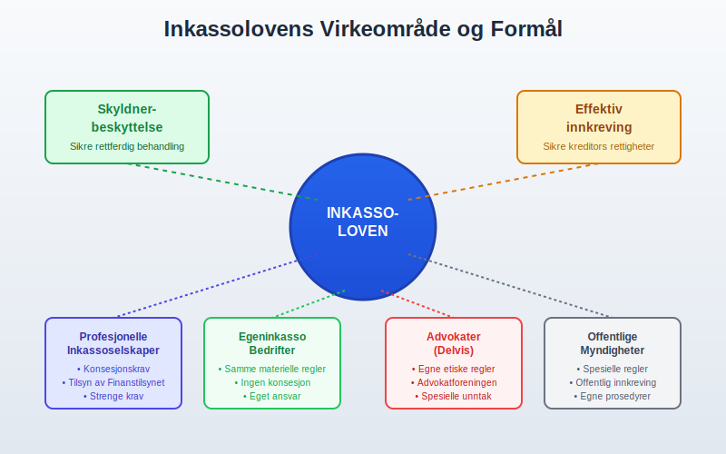
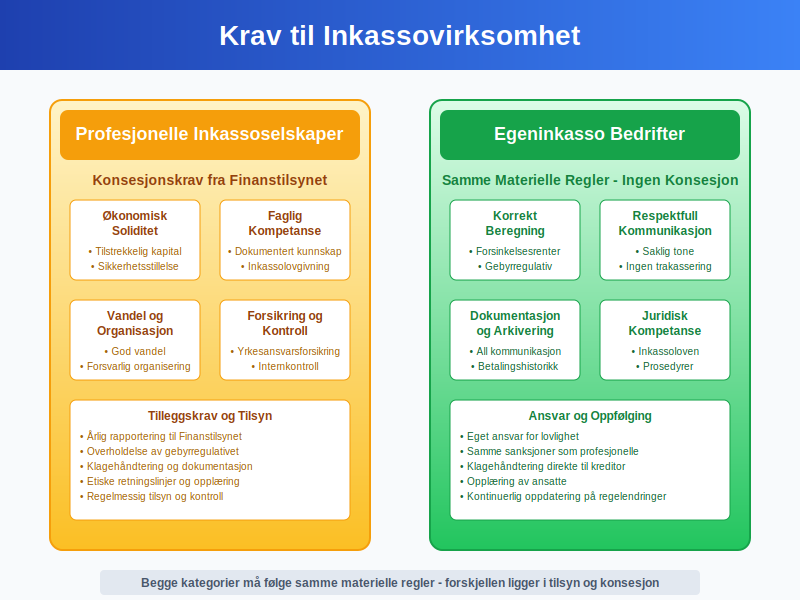
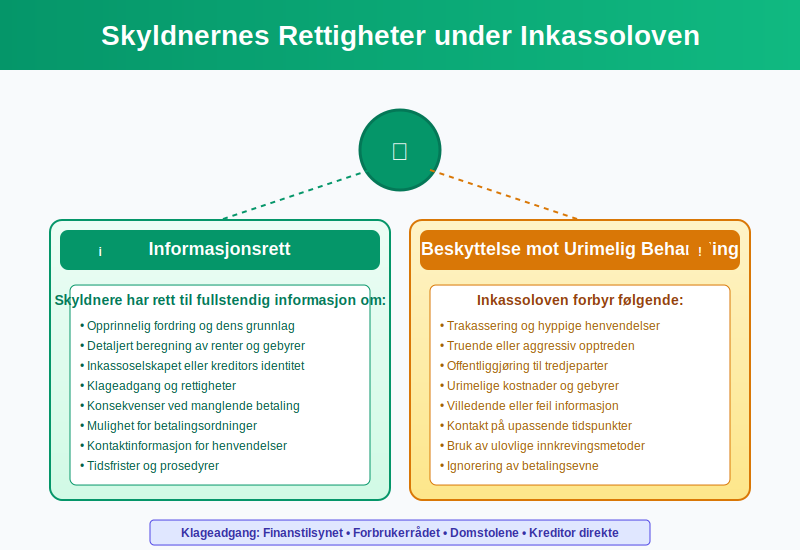
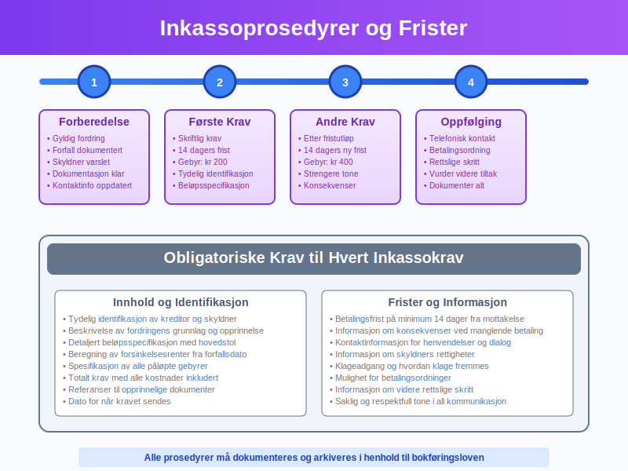
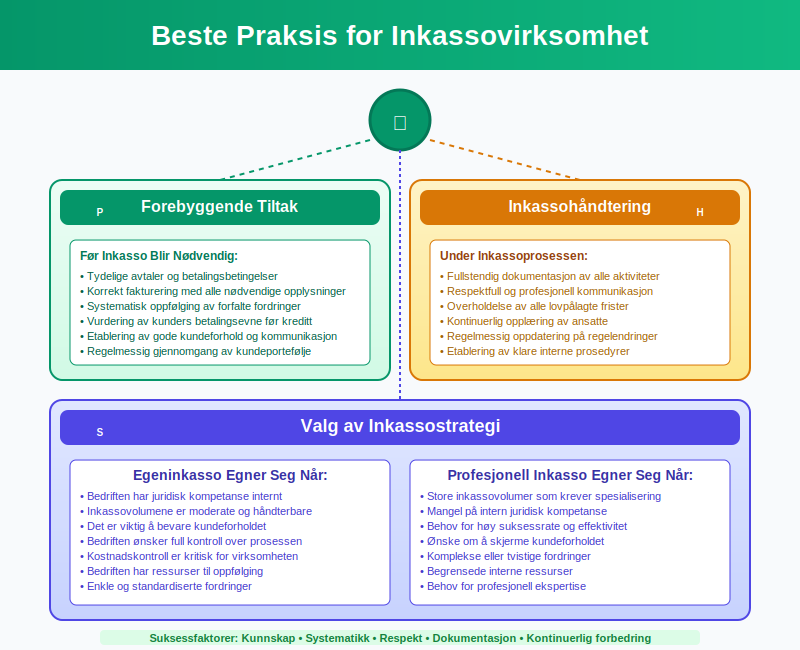

Inkassoloven er Norges sentrale lovgivning som regulerer inkassovirksomhet og beskytter skyldnere mot urettmessig behandling. Loven, formelt kjent som “Lov om inkassovirksomhet og annen inndriving av forfalte pengekrav”, etablerer klare rammer for hvordan kreditorer og inkassoselskaper kan drive innkreving av forfalte fordringer. For bedrifter som driver egeninkasso eller benytter profesjonelle inkassotjenester, er grundig forståelse av inkassoloven essensielt.
For en grundig gjennomgang av purring og purregebyr, se Hva er purring og purregebyr.
Seksjon 1: Inkassolovens Formål og Virkeområde
Inkassoloven har som hovedformål å beskytte skyldnere mot urimelig behandling samtidig som den sikrer kreditorer en effektiv måte å kreve inn forfalte fordringer på. Loven gjelder for all kommersiell inkassovirksomhet i Norge og setter strenge krav til både prosedyrer og kommunikasjon.

Lovens Hovedprinsipper
Inkassoloven bygger på flere grunnleggende prinsipper:
- Skyldnerbeskyttelse: Sikre at skyldnere behandles rettferdig og respektfullt
- Transparens: Krav om tydelig informasjon om fordringer og kostnader
- Proporsjonalitet: Inkassotiltak må stå i forhold til fordringens størrelse
- Dokumentasjon: All kommunikasjon og aktivitet må dokumenteres
- Profesjonalitet: Krav til kompetanse og etisk opptreden
Hvem Omfattes av Loven?
Inkassoloven gjelder for:
| Aktør | Omfattet av Loven | Spesielle Krav |
|---|---|---|
| Profesjonelle inkassoselskaper | Ja | Konsesjon og registrering |
| Bedrifter med egeninkasso | Ja | Samme regler som profesjonelle |
| Advokater | Delvis | Egne etiske regler i tillegg |
| Offentlige myndigheter | Delvis | Spesielle regler for offentlig innkreving |
| Private personer | Nei | Kun ved kommersiell virksomhet |
For misligholdte fordringer som ikke blir betalt etter alle inkassotiltak, kan det registreres en betalingsanmerkning. Dette gir en offentlig merknad i kredittopplysningsdatabaser som påvirker kredittverdigheten til debitor.
Dersom saken oversendes til retten for tvangsfullbyrdelse eller innkalling til domstol, vil det påløpe egne rettsgebyrer etter rettsgebyrloven.
Seksjon 2: Krav til Inkassovirksomhet
Inkassoloven stiller strenge krav til hvordan inkassovirksomhet skal drives. Disse kravene gjelder både for profesjonelle inkassoselskaper og bedrifter som driver egeninkasso.

Konsesjonskrav for Profesjonelle Inkassoselskaper
Profesjonelle inkassoselskaper må ha konsesjon fra Finanstilsynet for å drive inkassovirksomhet. Kravene inkluderer:
- Økonomisk soliditet: Tilstrekkelig kapital og sikkerhetsstillelse
- Faglig kompetanse: Dokumentert kunnskap om inkassolovgivning
- Vandel: Ledelse og ansatte må ha god vandel
- Organisasjon: Forsvarlig organisering og internkontroll
- Forsikring: Yrkesansvarsforsikring
Krav til Egeninkasso
Bedrifter som driver egeninkasso må overholde de samme materielle reglene som profesjonelle inkassoselskaper, men trenger ikke konsesjon. Dette inkluderer:
- Korrekt beregning av forsinkelsesrente
- Overholdelse av gebyrregulativet
- Respektfull og saklig kommunikasjon
- Korrekt dokumentasjon og arkivering
Seksjon 3: Skyldnernes Rettigheter
En sentral del av inkassoloven er beskyttelsen av skyldneres rettigheter. Loven sikrer at skyldnere behandles rettferdig og har tilgang til nødvendig informasjon og beskyttelse.
Informasjonsrett
Skyldnere har rett til fullstendig informasjon om:
- Opprinnelig fordring og dens grunnlag
- Beregning av renter og gebyrer
- Inkassoselskapet eller kreditors identitet
- Klageadgang og rettigheter
- Konsekvenser ved manglende betaling
Beskyttelse mot Urimelig Behandling
Inkassoloven forbyr:
- Trakassering: Hyppige eller upassende henvendelser
- Truende opptreden: Bruk av trusler eller press
- Offentliggjøring: Informasjon til tredjeparter uten hjemmel
- Urimelige kostnader: Gebyrer som ikke står i forhold til arbeidet
- Villedende informasjon: Feil eller misvisende opplysninger

Klageadgang
Skyldnere kan klage på inkassobehandling til:
- Finanstilsynet: For profesjonelle inkassoselskaper
- Forbrukerrådet: For forbrukersaker
- Domstolene: Ved rettslige tvister
- Kreditor direkte: Ved egeninkasso
Seksjon 4: Gebyrer og Kostnader
Inkassoloven og tilhørende forskrifter regulerer nøye hvilke gebyrer og kostnader som kan kreves ved inkasso. Dette sikrer at skyldnere ikke belastes med urimelige kostnader.
Lovlige Inkassogebyrer (2024)
| Type Gebyr | Maksimalt Beløp | Betingelser |
|---|---|---|
| Første inkassokrav | Kr 200 | Skriftlig krav med 14 dagers frist |
| Andre inkassokrav | Kr 400 | Etter utløp av første frist |
| Tredje inkassokrav | Kr 600 | Ved særlige omstendigheter |
| Forsinkelsesrente | 8,5% p.a. (2024) | Fra forfallsdato |
| Saksomkostninger | Faktiske kostnader | Ved rettslige skritt |
Beregning av Totalkostnader
Ved beregning av totale inkassokostnader må følgende elementer inkluderes:
- Hovedstol: Opprinnelig fordring
- Forsinkelsesrenter: Fra forfallsdato til betaling
- Inkassogebyrer: I henhold til forskriftene
- Eventuelle saksomkostninger: Ved rettslige skritt
Regnskapsføring av Inkassokostnader
For bedrifter som driver egeninkasso, skal inkassokostnader konteres som:
- Debet: Kundefordringer (økning av fordring)
- Kredit: Andre driftsinntekter (gebyr som inntekt)
Dette påvirker både driftsresultatet og likviditeten til bedriften.
Seksjon 5: Prosedyrer og Frister
Inkassoloven setter klare krav til prosedyrer og frister som må følges ved inkassovirksomhet. Disse reglene sikrer en rettferdig og forutsigbar prosess for alle parter.

Obligatoriske Prosedyrer
Før Inkasso Starter
Før inkassovirksomhet kan starte, må følgende være på plass:
- Gyldig fordring: Basert på avtale eller lov
- Forfall: Fordringen må være forfalt til betaling
- Varsel: Skyldner må være varslet om fordringen
- Dokumentasjon: All relevant dokumentasjon må være tilgjengelig
Inkassokrav og Frister
Hvert inkassokrav må inneholde:
- Identifikasjon: Tydelig identifikasjon av kreditor og skyldner
- Fordringens grunnlag: Beskrivelse av opprinnelig fordring
- Beløpsspecifikasjon: Detaljert oversikt over alle kostnader
- Betalingsfrist: Minimum 14 dager fra mottakelse
- Konsekvenser: Informasjon om videre tiltak ved manglende betaling
- Kontaktinformasjon: Mulighet for henvendelser og dialog
Spesielle Regler for Forbrukere
Ved inkasso overfor forbrukere gjelder strengere regler:
- Lengre frister for betaling
- Ekstra informasjonsplikt
- Begrensninger på kontaktmåter
- Særlig beskyttelse mot trakassering
- Rett til betalingsordninger
Seksjon 6: Sanksjoner og Konsekvenser
Brudd på inkassoloven kan få alvorlige konsekvenser for både profesjonelle inkassoselskaper og bedrifter som driver egeninkasso.
Administrative Sanksjoner
Finanstilsynet kan ilegge følgende sanksjoner:
| Sanksjon | Anvendelse | Konsekvenser |
|---|---|---|
| Pålegg | Mindre brudd | Krav om retting |
| Tvangsmulkt | Ved manglende etterlevelse | Daglige mulkter |
| Advarsel | Alvorligere brudd | Formell advarsel |
| Tilbakekall av konsesjon | Grove eller gjentatte brudd | Tap av driftstillatelse |
Straffeansvar
Grov eller systematisk overtredelse av inkassoloven kan medføre:
- Bøter: For mindre overtredelser
- Fengsel: Inntil 1 år for grove brudd
- Erstatningsansvar: Overfor skadelidte skyldnere
Sivilrettslige Konsekvenser
Brudd på inkassoloven kan også få sivilrettslige konsekvenser:
- Tap av rett til gebyrer: Ulovlige gebyrer kan ikke kreves
- Erstatningsplikt: For påførte skader og kostnader
- Ugyldiggjøring: Av ulovlige avtaler eller krav
Seksjon 7: Praktiske Råd for Bedrifter
For bedrifter som skal drive inkassovirksomhet, enten som egeninkasso eller ved bruk av profesjonelle tjenester, er det viktig å følge beste praksis.

Implementering av Inkassorutiner
Forebyggende Tiltak
- Tydelige avtaler: Sikre at alle avtaler er klare og juridisk bindende
- Korrekt fakturering: Følge alle krav til fakturainnhold
- Oppfølgingsrutiner: Etablere systematisk oppfølging av forfalte fordringer
- Kundevurdering: Vurdere kunders betalingsevne før kreditt
Inkassohåndtering
- Dokumentasjon: Sikre fullstendig dokumentasjon av alle aktiviteter
- Kommunikasjon: Opprettholde respektfull og profesjonell tone
- Frister: Overholde alle lovpålagte frister og prosedyrer
- Opplæring: Sikre at ansatte har nødvendig kompetanse
Valg av Inkassostrategi
Bedrifter må vurdere om de skal drive egeninkasso eller bruke profesjonelle tjenester:
Egeninkasso Egner Seg Når:
- Bedriften har juridisk kompetanse internt
- Inkassovolumene er moderate
- Kundeforholdet er viktig å bevare
- Kostnadskontroll er kritisk
Profesjonell Inkasso Egner Seg Når:
- Store inkassovolumer
- Mangel på intern juridisk kompetanse
- Behov for høy suksessrate
- Ønske om å skjerme kundeforholdet
Seksjon 8: Fremtidige Endringer og Utvikling
Inkassoloven er under kontinuerlig utvikling for å tilpasse seg endringer i samfunnet og teknologien. Bedrifter må holde seg oppdatert på endringer som kan påvirke deres inkassovirksomhet.
Pågående Reformer
Flere reformer er under vurdering:
- Digitalisering: Økt bruk av digitale løsninger og kommunikasjon
- Forbrukerbeskyttelse: Styrket beskyttelse av sårbare grupper
- Gebyrregulering: Justering av gebyrstrukturer
- Internasjonalisering: Tilpasning til EU-regelverk
Teknologiske Utviklinger
Nye teknologier påvirker inkassobransjen:
- Automatisering: Automatiserte inkassoprosesser
- Kunstig intelligens: AI-basert risikovurdering
- Blockchain: Sikker dokumentasjon og sporbarhet
- Mobile løsninger: Forbedret tilgjengelighet for skyldnere
Konklusjon
Inkassoloven er et omfattende regelverk som balanserer hensynet til effektiv innkreving av forfalte fordringer med beskyttelse av skyldneres rettigheter. For bedrifter som driver inkassovirksomhet, enten som egeninkasso eller ved bruk av profesjonelle tjenester, er grundig forståelse av loven essensielt.
Nøkkelen til vellykket og lovlig inkassovirksomhet ligger i:
- Grundig kunnskap om lovens krav og bestemmelser
- Systematiske prosedyrer som sikrer overholdelse
- Respektfull behandling av alle skyldnere
- Korrekt dokumentasjon av alle aktiviteter
- Kontinuerlig oppdatering på endringer i regelverket
Ved å følge inkassolovens bestemmelser kan bedrifter drive effektiv innkreving samtidig som de opprettholder høye etiske standarder og beskytter både egne interesser og skyldneres rettigheter. Dette bidrar til et sunt forretningsklima og bygger tillit i markedet.
For bedrifter som vurderer inkassostrategi, er det viktig å vurdere både juridiske, økonomiske og relasjonelle aspekter. Uavhengig av valg av strategi, må alle aktiviteter skje innenfor inkassolovens rammer for å sikre lovlig og etisk virksomhet.